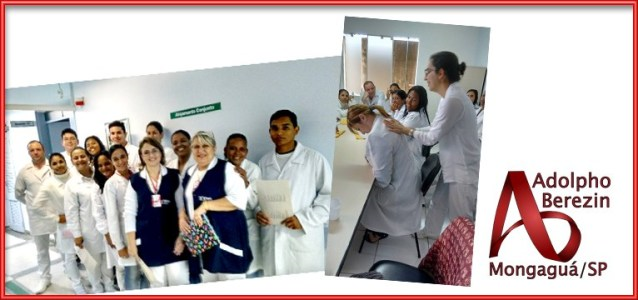
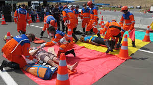

Cursos
Administração
Edificações
Desenvolvimento de sistemas
Enfermagem
Manutenção e Suporte em Informática
Turismo Receptivo
Cursos
Administração
Edificações
Desenvolvimento de sistemas
Enfermagem
Manutenção e Suporte em Informática
Turismo Receptivo
Etec Adolpho Berezin

etecab@etec.sp.gov.br
(13) 3448-3800
(13) 3448-3837
(13) 3448-3818
Redes Sociais


Enfermagem
Instituições hospitalares
O técnico de enfermagem é fundamental na área da Saúde, pois ele executa ações assistenciais de enfermagem, sob supervisão, observando e registrando sinais e sintomas apresentados pelo doente, fazendo curativos, ministrando medicamentos e outros, que contribuem para melhorar o padrão de saúde da população, garantindo uma assistência segura, efetiva e de qualidade.

Alunos da etec em estágio
Área cirúrgica hospitalar

Anamnese e cuidados ao paciente
Home Care
Home Care (cuidados em domicílio): A expressão Home Care designa literalmente, cuidados no lar. Este deve ser compreendido como uma modalidade contínua de serviços na área de saúde, cujas atividades são dedicadas aos pacientes e a seus familiares em um ambiente domiciliar, com ação de manter ou restaurar a independência do paciente trabalhando de forma diferenciada junto a família; ou seja, a meta principal de um modelo de atenção domiciliar é estabilizar e, sempre que possível, curar o paciente da enfermidade ou condição patológica em que se encontra.
O cuidado em domicílio
Idosos são o maior público
Como ser um bom profissional nessa área
Urgência e emergência
nesta área os técnicos em enfermagem devem atuar com agilidade e abordagem humanizada no atendimento de pacientes adultos, pediátricos e idosos em situações de emergência e urgência, tanto no pré-hospitalar quanto no intra-hospitalar. Por meio do aprendizado dos protocolos de instituições renomadas nacionais e internacionais, o aluno é treinado a gerenciar até mesmo o atendimento em catástrofes.
Hospitalar ou ambulâncias

Atendimento em catástrofes
Pré ou intra-hospitalar